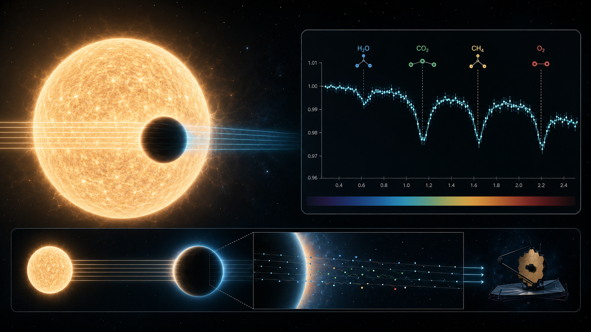
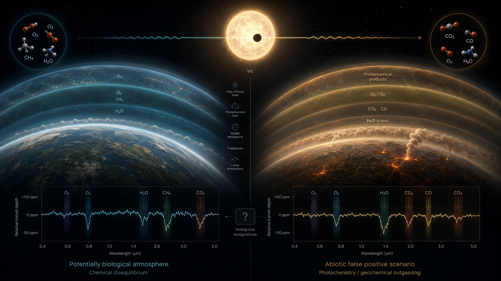
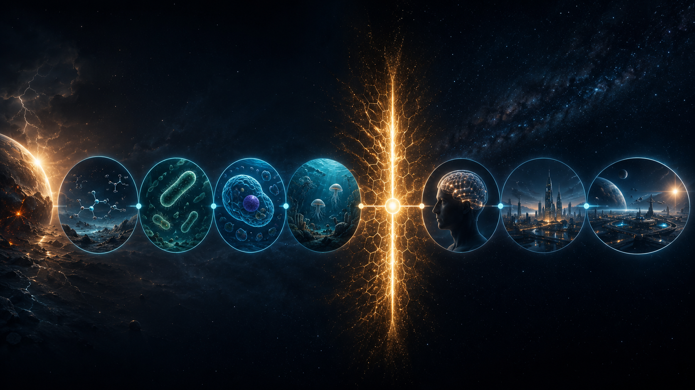

The first revolution is already over: planets are normal.
The old pessimistic possibility that planetary systems might be rare is no longer very persuasive. Kepler changed the landscape by showing that planets are common across the Galaxy, TESS continues to expand the nearby planet sample, and radial velocity surveys keep measuring planetary masses and orbital architectures. The NASA-confirmed exoplanet count passed 6,000 in 2025, and the archive continues to be updated as new planets are confirmed.
That sounds like a victory, and in one sense it is. But it also moves the question into a more uncomfortable form. If planets are common, then the next filters matter more: how often are planets temperate, rocky, chemically active, atmospherically stable, biologically productive, and observationally accessible? The discovery of a planet is only the first paragraph of a very long argument.
The phrase “habitable zone” also needs discipline. A planet in the habitable zone is not automatically habitable. It only means the stellar flux might allow liquid water on a suitable surface under suitable atmospheric conditions. That sentence contains enough caveats to make a press release visibly nervous.
Here \(S_p\) is the stellar flux received by the planet, \(L_\star\) is stellar luminosity, and \(a\) is orbital distance. The habitable-zone argument begins with flux, but real habitability also depends on atmosphere, geology, rotation, magnetic environment, stellar activity, and time.
Atmospheres are read by stealing tiny wavelength-dependent clues from starlight.
The modern search for life depends heavily on spectroscopy. If a planet transits its star, a small fraction of the starlight filters through the planet’s atmosphere before reaching us. Molecules in that atmosphere absorb specific wavelengths. In the data, this appears as a tiny wavelength-dependent change in transit depth. The planet is not shouting its composition. It is whispering through a star.
JWST demonstrated the power of this method with WASP-39b, where observations using NIRSpec produced a clear carbon dioxide feature between about 4.1 and 4.6 microns. That detection was not a biosignature, but it was a very important instrumentation moment: it showed that detailed atmospheric chemistry can be extracted from planets outside the Solar System when the target and instrument are favourable.

\(R_p\) is the planet radius, \(R_\star\) is the stellar radius, and \(h(\lambda)\) is the effective atmospheric height at wavelength \(\lambda\). The molecular information is hidden in \(h(\lambda)\), which is usually very small compared with the stellar disk.
For high-resolution spectroscopy, the problem changes shape. Instead of looking only for broad molecular features at low or moderate resolving power, high-resolution spectrographs can separate many narrow lines and use cross-correlation techniques to detect a molecular template moving at the planet’s orbital velocity. A resolving power of \(R \sim 100{,}000\) means:
At this resolution, tiny Doppler shifts and dense molecular line forests become measurable in principle. In practice, they fight the atmosphere, instrumental profile changes, detector behaviour, thermal drift, fibre stability, and the delightful chaos of real hardware.
This is exactly why detector-plane stability and spectrograph stabilisation matter. If a spectral line shifts because the planet moved, that is astrophysics. If it shifts because the instrument warmed by a small amount, that is a calibration problem wearing an astrophysics costume. Precision spectroscopy is not only about large telescopes; it is about making the instrument boring enough that the universe becomes the interesting part.
In extreme-precision radial velocity and high-resolution exoplanet spectroscopy, thermal control, optical-path stability, detector alignment, fibre scrambling, wavelength calibration, and environmental monitoring become scientific requirements rather than engineering decorations. This connects directly to my own interest in feedback-controlled instrumentation: if the spectrograph drifts, the signal extraction inherits that drift. A planet does not care that the lab temperature changed. The data certainly does.
A biosignature is not proof of life. It is a suspect with a complicated alibi.
A biosignature is an observable feature that may indicate biological activity. In exoplanet atmospheres, candidates often include oxygen, ozone, methane, nitrous oxide, water vapour, carbon dioxide, and chemical disequilibrium. But no single molecule is a magical alien stamp. Oxygen can have abiotic pathways. Methane can be geological. Carbon dioxide is common and not impressed by our excitement.
The strongest case would not be “we found molecule X”. It would be a coherent planetary context: a rocky planet, in a plausible climate regime, around a well-characterised star, with atmospheric gases in a combination that is difficult to sustain without biology, and with false positives carefully eliminated. That last part is where the science becomes slow, careful, and much less fun for headlines.

\(D\) is the observed data. A strong detection requires not only that life explains the data well, but that abiotic alternatives explain it poorly. The denominator is where overconfident claims go to suffer.
Stellar context matters enormously. M dwarfs are attractive because small stars make transit signals larger for Earth-sized planets, but they can also be magnetically active, flare, strip atmospheres, and complicate atmospheric interpretation. Sun-like stars may offer more familiar contexts, but the signals are smaller. Observational convenience and biological convenience are not always friends.
Therefore, a serious biosignature claim will probably require repeated observations, multiple wavelengths, atmospheric retrieval modelling, stellar activity monitoring, and independent confirmation. If that sounds slow, good. Life beyond Earth would be one of the most important discoveries in human history. It should not be announced with the evidential standard of a viral tweet.
Technosignatures are evidence that someone else may also be making engineering decisions under budget constraints.
A technosignature is an observable sign of technology. It might be a narrowband radio signal, a laser pulse, industrial atmospheric chemistry, artificial illumination, unusual waste heat, or large-scale engineering. NASA’s technosignature framing includes possibilities such as radio or laser pulses, artificial chemicals in exoplanet atmospheres, and Dyson-sphere-like structures that alter stellar light or infrared emission.
The reason technosignatures are attractive is that technology can be more obvious than biology. A civilisation that intentionally transmits, or unintentionally leaks energy, might produce signals far from thermodynamic or astrophysical equilibrium. The problem is that “weird” is not equal to “alien”. Weird can mean calibration error, terrestrial interference, satellites, plasma physics, dust, natural transients, or an instrument doing something deeply unhelpful at 3 a.m.
\(f_b\) is the fraction of the sky covered by the transmitted beam and \(\Omega\) is the beam solid angle. A tightly beamed signal is efficient if aimed correctly and almost invisible if it is not. The universe, as usual, is not obliged to aim things at us.
From an instrumentation point of view, SETI is a classification problem sitting on top of a detection problem. First, the receiver has to see a candidate above the noise. Then the pipeline has to decide whether the candidate is terrestrial interference, satellite contamination, natural astrophysics, or something genuinely anomalous. The failure modes are not philosophical; they are technical.
Build a cosmic link budget and watch the signal fight the noise floor.
This module is a simplified educational model, not a full observatory-grade radiometer simulation. The goal is to show how distance, transmitter power, antenna diameter, frequency, bandwidth, integration time, and beaming combine into a signal-to-noise problem. It is deliberately written like an instrumentation lab because that is what SETI becomes when the poetry is removed.
\(A_{\mathrm{eff}}\) is effective collecting area, \(D\) is antenna diameter, \(G_b\) is the simplified beaming gain, \(P_t\) is transmitter power, \(d\) is distance, \(B\) is bandwidth, \(\tau\) is integration time, \(T_{\mathrm{sys}}\) is system temperature, and \(k_B\) is Boltzmann’s constant.
SETI Signal Analyzer Lab
Adjust the transmission and receiver assumptions. The graph shows a synthetic narrowband signal buried inside noise. Detected means the toy SNR crosses a threshold; it does not mean aliens are waiting in the GitHub issues tab.
The signal is flirting with the threshold. It may be real, or it may be the universe clearing its throat.
Some step may be brutally difficult. The bad news is we do not know which one.
The Great Filter is the idea that somewhere between dead chemistry and long-lived technological civilisation, one or more transitions may be extremely unlikely. The filter could be behind us: perhaps life itself is rare, or complex cells are rare, or intelligence is rare. Or it could be ahead of us: perhaps technological species tend to destroy their own stability before they become visible across the Galaxy.
This is the part of astrobiology where the numbers start to feel personal. If we discover simple life is common, that is scientifically thrilling. It may also imply that the hard filter lies later. If we discover complex life is common but technological civilisation is absent, the interpretation becomes even more uncomfortable. The universe might not be empty; it might be full of evolutionary experiments that never build telescopes.

\(P_l\) is the probability that life begins, \(P_c\) that complex life develops, \(P_i\) that intelligence appears, \(P_t\) that technology becomes detectable, \(P_s\) that the civilisation survives long enough, and \(P_d\) that our instruments actually detect it. A small value in any one term can crush the final probability.
The Great Filter is not one hypothesis. It is a family of uncomfortable possibilities. The proper response is not panic; it is measurement. The more we learn about exoplanet atmospheres, planetary habitability, Solar System ocean worlds, and technosignature search limits, the more we can locate where the uncertainty actually lives.
The next generation will not answer everything. It will make bad answers harder to hide.
JWST is already transforming atmosphere studies for favourable exoplanets, but it was not designed as a dedicated Earth-twin biosignature survey machine. The future will require a layered approach: space telescopes that can directly image nearby terrestrial planets, ground-based extremely large telescopes for high-resolution spectroscopy, radio arrays for technosignature and transient searches, and better statistical tools to combine incomplete evidence.
NASA’s Habitable Worlds Observatory concept is particularly important because its stated objective is to identify and directly image potentially habitable planets around other stars, with spectroscopy searching for atmospheric biosignatures such as oxygen and methane. That is the shift from “finding planets” to “interrogating planets”. The planets should be nervous.
The most realistic future is not one heroic telescope finding “the alien planet”. It is a network of instruments slowly reducing ambiguity: photometry to find worlds, radial velocities to measure masses, spectroscopy to probe atmospheres, direct imaging to separate planets from stars, radio searches to test technosignatures, and theory to stop us from confusing noise with destiny.
The most dangerous phrase in this field is “therefore aliens”.
A credible life detection will need to survive the boring questions. Is the signal repeatable? Is the instrument stable? Is the star active? Are there clouds? Are the spectral features model-dependent? Could geology explain the chemistry? Could the radio signal be terrestrial interference? Could the apparent anomaly be a data reduction artefact?
This is not pessimism. It is the quality-control system that makes a discovery trustworthy. The stronger the claim, the more aggressively it must be tested. A weak claim that becomes viral is not stronger; it is merely louder.
This is not a formal equation. It is a survival rule. If the instrumental and natural explanations have not been seriously attacked, the claim is not ready.
So, are we alone? Part II does not answer that. It makes the question sharper. Planets are common. Atmospheres are measurable. Biosignatures are possible but ambiguous. Technosignatures are exciting but treacherous. Future observatories may finally turn the question from philosophical discomfort into a statistical and spectroscopic programme. That is progress. It is not closure, but it is better than staring dramatically at the sky and hoping the Galaxy replies.
Selected sources used for this post.
The style can be sarcastic; the science should remain traceable. These sources support the main factual anchors: exoplanet counts, JWST spectroscopy, technosignature framing, and future life-detection mission concepts.
Comments & reactions
Powered by GitHub Discussions via giscus. Leave a question, correction, or your favourite explanation for why the Galaxy is ghosting us.